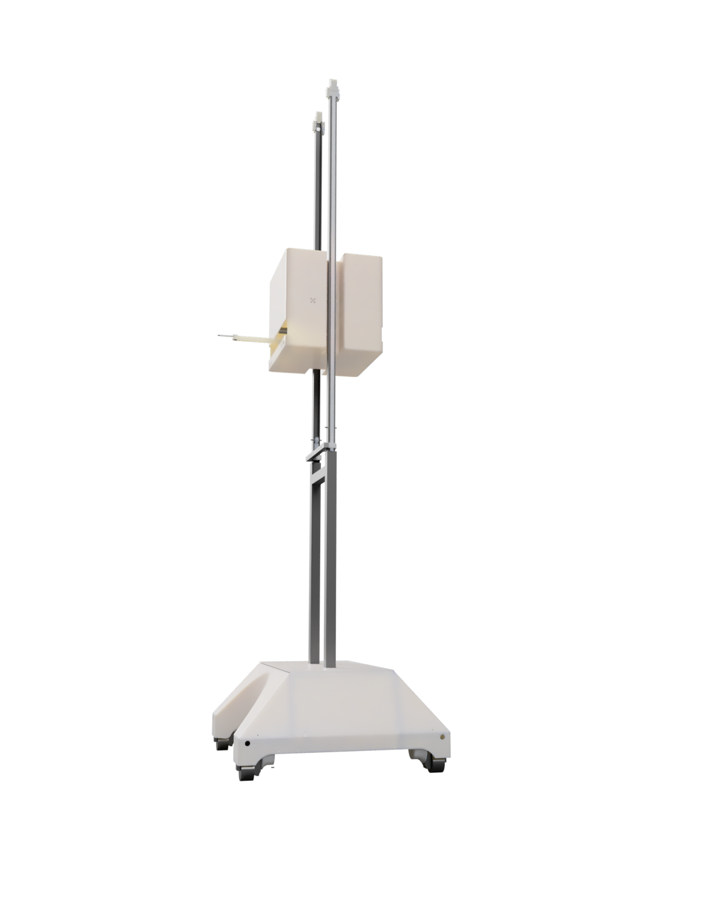
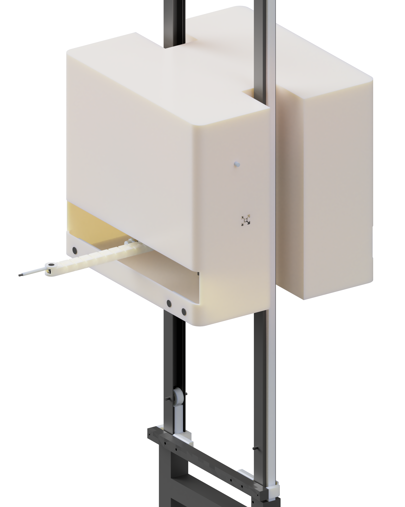

Работает вне зависимости от погоды и времени года
Опыление выполняется внутри теплицы и не зависит от внешних погодных условий.
Аналог шмелям для промышленных теплиц.
Эффективное решение для автоматизации опыления в закрытом грунте.

В основе RoboBee — механическая вибрация соцветия, то есть принцип buzz pollination, который используется при опылении томатов шмелями.
RoboBee разрабатывается как автономное решение для промышленных теплиц: робот движется вдоль ряда, распознаёт соцветие и выполняет опыление без остановки.
Опыление выполняется внутри теплицы и не зависит от внешних погодных условий.
Система работает последовательно по рядам и помогает сделать процесс более повторяемым.
Дальнейшее развитие системы предусматривает обработку после прохождения ряда.

Камеры впереди по текущему направлению движения заранее находят нужное соцветие.
Верхний модуль подводится к нужному уровню; подъём до 3 м уже реализован и протестирован.
Робот продолжает двигаться, а каретка перемещается в своём окне относительно направления движения.
Каретка выдвигается, наклоняется и поворачивает конечный элемент, обходя стебель.
Рабочий орган вибрирует полное соцветие — ветку с несколькими цветами.
На каждой стороне робота расположены две пары камер — в начале и в конце верхнего модуля. «Передней» становится пара, которая находится впереди относительно текущего направления движения.
Система зрения и механика работают как единый цикл: увидеть → навести → вибрировать → двигаться дальше.
RoboBee уже имеет рабочий механизм подъёма до 3 м. Остальная конструкция и алгоритмы продолжают развиваться.
Собрана и проверяется базовая роботизированная система.
Функция реализована и протестирована.
Отработка движения, зрения и наведения на соцветия.
Развитие алгоритмов и системы управления.